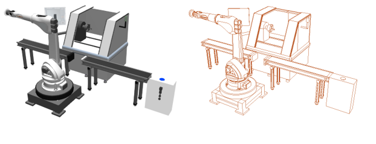
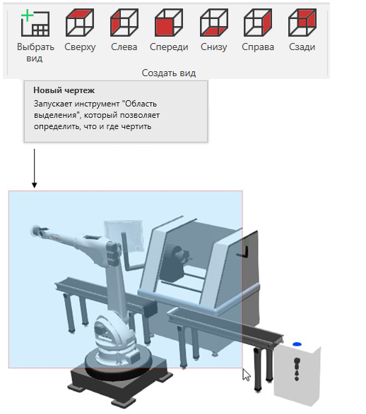
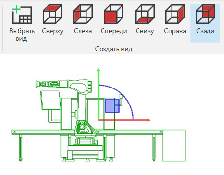
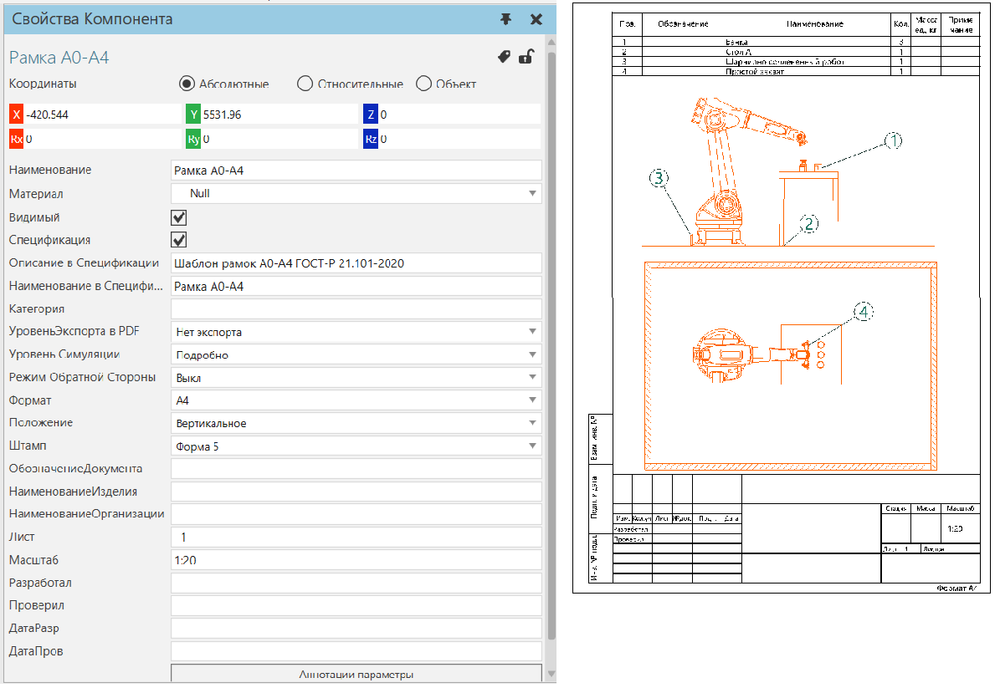
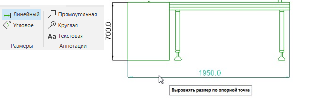
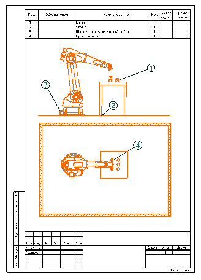

Создание Чертежа |
|
Чертеж — это вид текущей планировки в трехмерном мире, представленный наборами линий.  С помощью вкладки Чертеж вы можете создавать новые чертежи вручную или автоматически. ·На ленте в группе Создать вид выполните одно из следующих действий: ·Чтобы вручную создать чертеж, нажмите Выбрать вид. Затем вам будет предложено выбрать область в 3D-мире для отображения в виде чертежа.
 ·Чтобы автоматически создать чертеж с использованием стандартного ортоготального вида, щелкните на один из доступных видов.
 У всех чертежей есть свойства, которые можно увидеть/задать на панели Свойства. Используя шаблон чертежа, вы можете создать готовый к печати технический чертеж, а также спецификацию. Каждый компонент имеет свойство Спецификация, которое используются для заполнения таблицы спецификации в шаблоне.  Если вы хотите добавить размеры и аннотации к чертежу: ·На ленте используйте команды в группах Размеры и Аннотации.
 Все объекты в чертеже являются элементами планировки, имеющими собственный набор свойств. Что такое элемент планировки? Элемент планировки — это визуальный объект, который не является компонентом и сохраняется в планировке. Это означает, что ваши чертежи, аннотации и размеры генерируются каждый раз, когда вы загружаете планировку в трехмерный мир. Чертеж нельзя сохранить отдельно от планировки. Однако вы можете печатать и экспортировать чертежи.  |